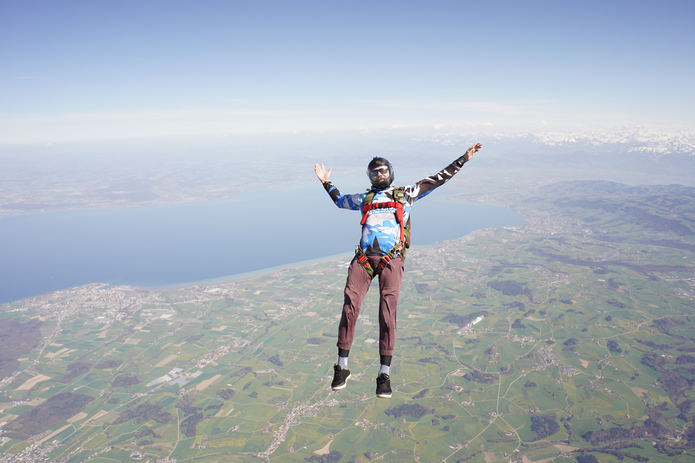

MIGROS GENOSSENSCHAFT OSTSCHWEIZ • 2024
Für die Migros Ostschweiz entstand mit „Kulturrunde in der Region“ ein Social-Media-Format, das Menschen aus der Ostschweiz mit ihren Leidenschaften und regionalen Produkten verbindet. Im Zentrum jeder Episode steht eine Persönlichkeit aus der Region, deren Hobby oder Tätigkeit mit einem Produkt aus dem Label „Aus der Region. Für die Region.“ verknüpft wird.
Die Serie begleitet unterschiedliche Menschen – darunter ein Fussballer, eine Eisbadende, ein DJ, ein Wanderer oder ein Skydiver – in ihrem persönlichen Umfeld und zeigt die Vielfalt regionaler Kultur und Aktivitäten auf authentische Weise.
Im Rahmen des Projekts wurden das Gesamtkonzept entwickelt, die einzelnen Episoden konzipiert sowie die videografische Umsetzung realisiert. Dazu gehörten die kreative Ausarbeitung der Inhalte, Storytelling, Dreharbeiten und Postproduktion für die Veröffentlichung auf Social Media.
Das Ergebnis ist eine moderne Video-Serie mit starkem regionalem Bezug, die Geschichten, Menschen und Produkte emotional miteinander verbindet.
"Geschichten, Menschen und Produkte emotional miteinander verbinden."